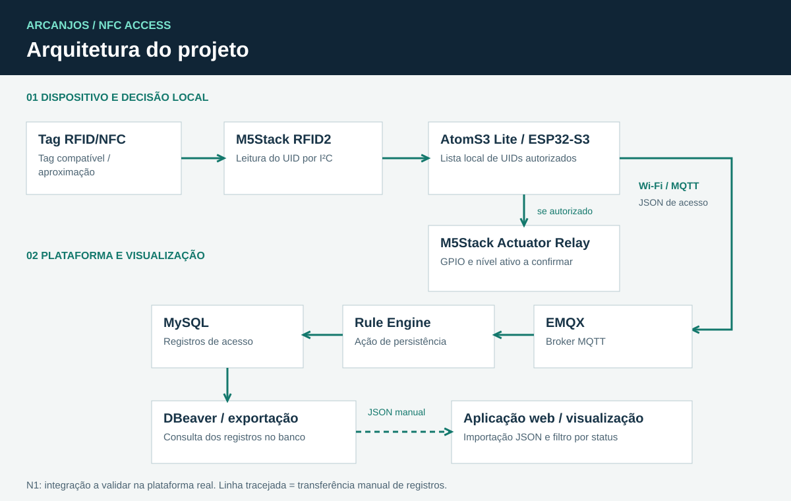
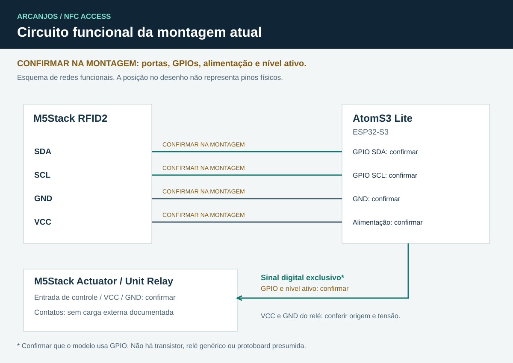

MQTT e EMQX
O dispositivo publica JSON no tópico arcanjos/acesso. O EMQX recebe o evento; a regra extrai os campos e a ação MySQL grava uma linha.
PROJETO INTEGRADOR 6 / PRIMEIRA ENTREGA N1
Controle de acesso com identificação por RFID/NFC, decisão no dispositivo e registro de eventos na plataforma IoT.
Protótipo acadêmico · Versão inicial documentada
O PROJETO
O Arcanjos NFC Access propõe identificar uma tag compatível, comparar seu UID com uma lista local de permissões e acionar o relé para uma autorização. Cada leitura processada gera um evento para o broker EMQX, que pode encaminhá-lo ao MySQL pelo Rule Engine.
Esta entrega reúne a página, o firmware inicial, a arquitetura, o circuito funcional e o banner. A validação desta versão na montagem real ainda precisa ser registrada.
01 / PLATAFORMA
O dispositivo publica JSON no tópico arcanjos/acesso. O EMQX recebe o evento; a regra extrai os campos e a ação MySQL grava uma linha.
O banco guarda dispositivo, UID, status e horário de recebimento. O DBeaver permite consultar e exportar os registros. Docker pode hospedar os serviços da plataforma existente.
A seção Aplicativo exibe exemplos ou um arquivo JSON importado. A conexão automática com o banco depende de uma API futura.

02 / DISPOSITIVOS
Controlador ESP32-S3: executa a lógica de acesso, controla o relé e conecta-se à rede Wi-Fi.
Leitor para tags compatíveis. Entrega o UID ao controlador por I²C. Não pressupõe compatibilidade com qualquer celular ou cartão NFC.
Módulo de acionamento presente no projeto. Modelo exato, porta, alimentação e nível ativo: CONFIRMAR NA MONTAGEM.
SDA, SCL, GPIO do relé e conexões de alimentação precisam ser conferidos fisicamente. O circuito não inclui transistor, relé genérico, fechadura ou protoboard sem evidência de uso.

03 / APLICATIVO
Visualizador local de registros. Carregue os exemplos para conhecer a interface ou importe uma exportação JSON do MySQL. Nenhuma conexão automática com EMQX ou MySQL é feita por esta página.
Nenhum arquivo carregado.
| Data / hora | Dispositivo | UID | Status |
|---|---|---|---|
| Importe registros ou carregue a demonstração. | |||
A autorização representa a decisão lógica do firmware; não comprova passagem física nem abertura de uma porta.
Baixar JSON de exemploDOCUMENTAÇÃO / N1